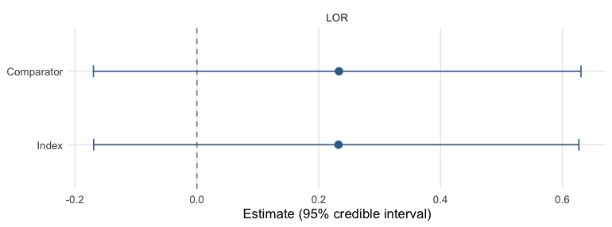

Binary outcomes: an unanchored PASI 75 comparison
Source:vignettes/binary-outcomes.Rmd
binary-outcomes.RmdThis vignette is a complete worked example of an
unanchored indirect comparison for a
binary endpoint, using plaque-psoriasis trial data
bundled with mlumr (psoriasis_ipd /
psoriasis_agd, copied from the GPL-3 multinma
package (Phillippo
2024)). It is the unanchored, two-study analogue of
multinma’s plaque_psoriasis ML-NMR example (Phillippo et al.
2020). For the shared data-preparation machinery see
vignette("data-preparation"); for sampler/prior/diagnostic
detail see vignette("fitting-and-diagnostics"); for how to
choose between methods see
vignette("choosing-a-method").
About these data.
psoriasis_ipd/psoriasis_agdare copied verbatim frommultinma; they were not re-simulated for mlumr. multinma’s patient records are themselves simulated to resemble the published UNCOVER-2 (Griffiths et al. 2015) and FIXTURE (Langley et al. 2014) trials. mlumr bundles one arm from each trial: ixekizumab Q4W from UNCOVER-2 and secukinumab 300 mg from FIXTURE. Both trials also randomized patients to placebo and etanercept, and those arms are deliberately omitted here. Keeping them would connect the two trials through a common comparator and make an anchored comparison possible, which is not the problem this vignette is about. The unanchored framing is a construction for illustration; the section Checking against the anchored comparison below puts the omitted arms back to use.
The clinical question
We want the relative efficacy of two interleukin inhibitors on PASI 75 response (≥ 75% improvement in the Psoriasis Area and Severity Index) at week 12, when:
-
Index (IPD). We hold individual patient data for
ixekizumab Q4W (
IXE_Q4W) from the UNCOVER-2 trial (Griffiths et al. 2015). -
Comparator (AgD). Only published aggregate data are
available for secukinumab 300 mg (
SEC_300) from the FIXTURE trial (Langley et al. 2014).
The two trials share no common arm, so the comparison is
unanchored and relies on the shared-effect-modifier /
conditional-constancy assumptions discussed in
vignette("introduction"). ML-UMR adjusts for cross-trial
differences in prognostic factors by standardizing the IPD model to the
comparator population (and vice versa).
The ML-UMR model
On the index IPD, ML-UMR fits an individual-level logistic regression for the probability of PASI 75 response, \operatorname{logit}\Pr(y_{ik}=1\mid x_i)=\mu_k+x_i^\top\beta_k, where \mu_k is a treatment-specific intercept and \beta_k the vector of prognostic-factor coefficients. The aggregate comparator does not contribute patient rows; instead its likelihood is the individual model integrated over the comparator covariate distribution f_{\text{AgD}}(x) implied by the published moments, \bar p_k=\Pr(Y=1\mid \text{AgD population})=\int\operatorname{logit}^{-1}(\mu_k+x^\top\beta_k)\,f_{\text{AgD}}(x)\,dx, which mlumr approximates with quasi-Monte Carlo integration points (see Setting up the ML-UMR data). This is the same population-adjustment device as ML-NMR (Phillippo et al. 2020), specialized to the unanchored two-study case.
Two variants differ only in how the prognostic effects are shared across treatments:
- SPFA (shared prognostic factors) assumes \beta_{\text{index}}=\beta_{\text{comparator}}=\beta, the conditional-constancy / shared-effect-modifier assumption.
- Relaxed frees them, \beta_{\text{index}}\neq\beta_{\text{comparator}}, allowing effect modification at the cost of identifiability (the comparator coefficients are informed only by the single AgD likelihood term).
Population-standardized treatment effects are formed by averaging the \operatorname{logit}^{-1} predictions over a target population and contrasting the treatments, yielding effects in both the index and comparator populations.
SPFA is the unanchored analogue of the shared-effect-modifier assumption used in anchored comparisons, but it is a stronger assumption, so transportability is correspondingly harder to justify (Chandler and Ishak 2025). A useful consequence, established by simulation (Chandler and Ishak 2025): the comparator-population effect is robust, recovered with little bias even when SPFA is violated, because the prognostic coefficients are anchored by the index IPD, whereas the index-population effect is biased if SPFA is wrongly imposed under strong effect modification. (Restricted to the comparator population, the SPFA estimand has the same standardization target as unanchored STC. The estimators still differ: ML-UMR fits a joint likelihood in which the aggregate outcome informs the comparator intercept, whereas STC regresses on the IPD alone.)
library(mlumr)
library(ggplot2)
# IPD + AgD bundled with mlumr (copied from multinma's plaque_psoriasis, GPL-3).
data("psoriasis_ipd")
data("psoriasis_agd")
covs <- c("age", "bsa", "weight", "prevsys") # adjustment set for this example
# --- Index IPD: UNCOVER-2, ixekizumab Q4W -----------------------------------
ipd <- psoriasis_ipd
ipd$bsa <- ipd$bsa / 100 # body-surface area: % -> proportion
ipd <- ipd[ipd$study == "UNCOVER-2" & ipd$treatment == "IXE_Q4W", ]
ipd <- ipd[stats::complete.cases(ipd[, c("pasi75", covs)]), ]
# --- Comparator AgD: FIXTURE, secukinumab 300 mg ----------------------------
agd <- psoriasis_agd
agd$bsa_mean <- agd$bsa_mean / 100
agd$bsa_sd <- agd$bsa_sd / 100
agd <- agd[agd$study == "FIXTURE" & agd$treatment == "SEC_300", ]A glimpse of the individual patient data (one row per patient) and the single aggregate comparator row:
knitr::kable(head(ipd[, c("study", "treatment", "pasi75", covs)]),
caption = "Index IPD (UNCOVER-2, ixekizumab Q4W), first rows")| study | treatment | pasi75 | age | bsa | weight | prevsys |
|---|---|---|---|---|---|---|
| UNCOVER-2 | IXE_Q4W | 1 | 49 | 0.25 | 88.7 | 1 |
| UNCOVER-2 | IXE_Q4W | 1 | 33 | 0.29 | 96.3 | 1 |
| UNCOVER-2 | IXE_Q4W | 1 | 25 | 0.40 | 93.6 | 1 |
| UNCOVER-2 | IXE_Q4W | 0 | 60 | 0.20 | 112.0 | 1 |
| UNCOVER-2 | IXE_Q4W | 1 | 49 | 0.20 | 119.3 | 0 |
| UNCOVER-2 | IXE_Q4W | 1 | 58 | 0.16 | 92.0 | 1 |
knitr::kable(agd[, c("study", "treatment", "pasi75_r", "pasi75_n",
"age_mean", "bsa_mean", "weight_mean", "prevsys_prop")],
caption = "Comparator AgD (FIXTURE, secukinumab 300 mg)")| study | treatment | pasi75_r | pasi75_n | age_mean | bsa_mean | weight_mean | prevsys_prop |
|---|---|---|---|---|---|---|---|
| FIXTURE | SEC_300 | 249 | 323 | 44.5 | 0.343 | 83 | 0.63 |
Covariate balance
Population adjustment is motivated by the fact that the two trial populations differ on prognostic factors. Comparing the index sample means against the published comparator means shows the imbalance we must adjust for:
balance <- data.frame(
Covariate = c("Age (years)", "Body-surface area (prop.)",
"Weight (kg)", "Previous systemic (prop.)"),
Index_IXE = c(mean(ipd$age), mean(ipd$bsa), mean(ipd$weight), mean(ipd$prevsys)),
Comparator_SEC = c(agd$age_mean, agd$bsa_mean, agd$weight_mean, agd$prevsys_prop)
)
knitr::kable(balance, caption = "Prognostic-factor balance: index vs comparator population")| Covariate | Index_IXE | Comparator_SEC |
|---|---|---|
| Age (years) | 45.7275362 | 44.500 |
| Body-surface area (prop.) | 0.2761159 | 0.343 |
| Weight (kg) | 94.0605797 | 83.000 |
| Previous systemic (prop.) | 0.6782609 | 0.630 |
Setting up the ML-UMR data
set_ipd() takes the patient-level data;
set_agd() takes the comparator event count
(outcome_r), sample size (outcome_n), and
covariate summaries. Covariate column suffixes (_mean,
_sd) are stripped to match the IPD names.
ipd_obj <- set_ipd(ipd, treatment = "treatment", outcome = "pasi75", covariates = covs)
agd_obj <- set_agd(agd, treatment = "treatment",
outcome_n = "pasi75_n", outcome_r = "pasi75_r",
cov_means = c("age_mean", "bsa_mean", "weight_mean", "prevsys_prop"),
cov_sds = c("age_sd", "bsa_sd", "weight_sd", NA),
cov_types = c("continuous", "continuous", "continuous", "binary"))
dat <- combine_data(ipd_obj, agd_obj)
dat
#> Unanchored Comparison Data (Binary)
#> ====================================
#>
#> Index treatment (IPD): IXE_Q4W
#> N = 345
#> Events = 267 (77.4%)
#>
#> Comparator treatment (AgD): SEC_300
#> N = 323
#> Events = 249 (77.1%)
#>
#> Covariates ( 4 ): age, bsa, weight, prevsys
#> Integration points: not yet added (use add_integration())The comparator covariate distribution is represented by quasi-Monte
Carlo integration points drawn from each covariate’s marginal,
correlated via a Gaussian copula calibrated from the IPD. The marginals
are the ones multinma’s own plaque-psoriasis example uses: gammas for
the right-skewed age and weight, a logit-normal for body-surface area (a
proportion, so it must stay inside (0, 1)), and a Bernoulli
for previous systemic therapy. We use a modest n_int = 64
here so the vignette builds quickly; a real analysis would use several
hundred or more (see vignette("data-preparation")).
dat <- add_integration(
dat, n_int = 64,
# Marginals follow multinma's own plaque-psoriasis example: gamma for the
# right-skewed continuous covariates, logit-normal for body surface area
# (a proportion), Bernoulli for the binary one. mlumr's qgamma() and
# qlogitnorm() accept a mean and sd directly, so the published baseline
# table can be used as printed.
age = distr(qgamma, mean = age_mean, sd = age_sd),
bsa = distr(qlogitnorm, mean = bsa_mean, sd = bsa_sd),
weight = distr(qgamma, mean = weight_mean, sd = weight_sd),
prevsys = distr(qbern, prob = prevsys_mean)
)check_integration() confirms the quasi-Monte Carlo
points reproduce the requested covariate moments, run it whenever
covariates are correlated or n_int is small:
check_integration(
dat,
age = distr(qgamma, mean = age_mean, sd = age_sd),
bsa = distr(qlogitnorm, mean = bsa_mean, sd = bsa_sd),
weight = distr(qgamma, mean = weight_mean, sd = weight_sd),
prevsys = distr(qbern, prob = prevsys_mean)
)
#> Integration check: n_int = 64 vs 128
#> Resolution heuristic, max relative difference: 0.0310
#> Caution: 1-5% marginal relative difference. Consider increasing n_int.
#> Declared-target fidelity, max relative difference: 0.0638
#> Warning: grid moments differ from declared AgD moments by >5%.
#> Joint: max |cor(current) - cor(doubled)|: 0.1025
#> Warning: pairwise correlations differ by > 0.05 between resolutions.
#> Target (spearman): max |cor(doubled) - cor_target|: 0.0390Frequentist benchmarks
The unadjusted (naive) comparison ignores the covariate imbalance; STC adjusts for it by parametric G-computation. Both are fast and serve as reference points.
res_naive <- naive(dat)
res_stc <- stc(dat)
res_naive
#> Naive Unadjusted Indirect Comparison
#> =====================================
#>
#> Treatments: IXE_Q4W vs SEC_300
#>
#> Population basis: index-study outcome versus comparator-population outcome; no common standardized target.
#>
#> Event rates:
#> Index (IPD): 0.774 (267/345)
#> Comparator (AgD): 0.771 (249/323)
#>
#> Log Odds Ratio: 0.0172 (SE: 0.1846)
#> 95% CI: [-0.3448, 0.3791]
#>
#> All effect measures (95% CI):
#> Log odds ratio 0.0172 (SE 0.1846) [-0.3448, 0.3791]
#> Odds ratio 1.0173 [0.7084, 1.4609]
#> Risk difference 0.0030 (SE 0.0325) [-0.0606, 0.0666]
#> Risk ratio 1.0039 [0.9245, 1.0901]
res_stc
#> Simulated Treatment Comparison (G-computation)
#> ===============================================
#>
#> Treatments: IXE_Q4W vs SEC_300
#>
#> Estimand population: comparator
#> Treating this as the index-population effect requires a separate effect-equality assumption; this calculation does not transport to the index population.
#>
#> Marginalized P(Y=1|index trt, comp pop): 0.8106
#> Observed P(Y=1|comp trt, comp pop): 0.7709
#>
#> Log Odds Ratio: 0.2403 (SE: 0.2029)
#> 95% CI: [-0.1575, 0.6380]
#>
#> All effect measures (95% CI):
#> Log odds ratio 0.2403 (SE 0.2029) [-0.1575, 0.6380]
#> Odds ratio 1.2716 [0.8543, 1.8928]
#> Risk difference 0.0397 (SE 0.0332) [-0.0255, 0.1048]
#> Risk ratio 1.0515 [0.9683, 1.1418]
#>
#> Outcome model coefficients:
#> (Intercept) age bsa weight prevsys
#> 4.3879 -0.0404 0.0676 -0.0139 0.1003Fitting the ML-UMR models
The binomial family supports "logit" (default),
"probit", and "cloglog" links. We fit both the
shared-prognostic-factor model (SPFA) and the
relaxed model (treatment-specific prognostic effects,
allowing effect modification). Because age is on a ~50-unit scale,
autoscale = TRUE keeps the coefficient prior’s contribution
on a common SD scale. The numerical scale is still an
application-specific choice and should be checked predictively.
fit_spfa <- mlumr(dat, model = "spfa", link = "logit",
prior_beta = prior_normal(0, 2.5, autoscale = TRUE),
chains = 4, iter = 2000, warmup = 1000,
seed = 2026, refresh = 0)
#> Running MCMC with 4 parallel chains...
#>
#> Chain 1 finished in 0.8 seconds.
#> Chain 2 finished in 0.8 seconds.
#> Chain 3 finished in 0.8 seconds.
#> Chain 4 finished in 0.8 seconds.
#>
#> All 4 chains finished successfully.
#> Mean chain execution time: 0.8 seconds.
#> Total execution time: 1.0 seconds.
fit_relaxed <- mlumr(dat, model = "relaxed", link = "logit",
prior_beta = prior_normal(0, 2.5, autoscale = TRUE),
chains = 4, iter = 2000, warmup = 1000,
seed = 2026, refresh = 0)
#> Running MCMC with 4 parallel chains...
#>
#> Chain 2 finished in 4.3 seconds.
#> Chain 4 finished in 4.7 seconds.
#> Chain 3 finished in 5.3 seconds.
#> Chain 1 finished in 5.7 seconds.
#>
#> All 4 chains finished successfully.
#> Mean chain execution time: 5.0 seconds.
#> Total execution time: 5.8 seconds.
summary(fit_spfa)
#> ML-UMR Model Summary
#> ====================
#>
#> Model: SPFA
#> Family: Binary
#> Link: logit
#> Engine: cmdstanr
#> Treatments: IXE_Q4W (IPD) vs SEC_300 (AgD)
#>
#> MCMC Diagnostics:
#> Divergent transitions: 0
#> Max treedepth hits: 0
#> Max Rhat: 1.003
#> Min ESS: 1836
#>
#> Intercepts (logit scale):
#> variable mean sd 2.5% 97.5% Rhat
#> mu_index 1.433550 0.1566491 1.1431922 1.745167 1.002008
#> mu_comparator 1.182341 0.1504401 0.8824316 1.474706 1.000581
#>
#> Regression Coefficients:
#> variable mean sd 2.5% 97.5% Rhat
#> beta[age] -0.04089938 0.011061348 -0.06207939 -0.018932920 1.000364
#> beta[bsa] 0.08158985 0.756802237 -1.35288580 1.631374443 1.000150
#> beta[weight] -0.01385874 0.006396755 -0.02678303 -0.001332561 1.000806
#> beta[prevsys] 0.09063289 0.296119495 -0.48294336 0.658655304 1.002473
#>
#> Marginal Treatment Effects:
#> Log Odds Ratios:
#> variable mean sd 2.5% 97.5%
#> lor_index 0.2323910 0.2047769 -0.1695227 0.6270024
#> lor_comparator 0.2332364 0.2056267 -0.1698324 0.6304798
#> Risk Differences:
#> variable mean sd 2.5% 97.5%
#> rd_index 0.04364540 0.03862472 -0.03157762 0.1196621
#> rd_comparator 0.03821683 0.03369655 -0.02940678 0.1037666
#> Risk Ratios:
#> variable mean sd 2.5% 97.5%
#> rr_index 1.061858 0.05571767 0.9589326 1.177867
#> rr_comparator 1.050589 0.04504107 0.9631279 1.140555Priors
These fits use \mu_k\sim\mathrm{N}(0,10^2) for the
intercepts and \beta\sim\mathrm{N}(0,2.5^2) for the
coefficients, the latter autoscaled by each covariate’s
standard deviation. Autoscaling puts contributions on a common SD scale;
it does not establish that 2.5 is appropriate for a particular endpoint.
prior_summary() shows exactly what was passed to Stan,
including the autoscaled scales:
prior_summary(fit_spfa)
#> Priors for ML-UMR Fit
#> =====================
#>
#> Intercepts (mu_index, mu_comparator):
#> normal(0, 10)
#> (package default, mlumr 0.1.0.9000)
#>
#> Regression coefficients (beta):
#> Family: normal
#> coefficient mean scale autoscaled sd_x
#> age 0 0.196 TRUE 12.784
#> bsa 0 14.055 TRUE 0.178
#> weight 0 0.120 TRUE 20.794
#> prevsys 0 5.344 TRUE 0.468
#> (scale = user_scale / sd_x for autoscaled rows)The data are substantially more informative than the priors, the posterior intercepts are much tighter than the \mathrm{N}(0,10) prior:
plot_prior_posterior(fit_spfa, pars = c("mu_index", "mu_comparator"))
plot of chunk prior-post
Handling quasi-complete separation
With small or sparse binary data, rare events, or a covariate that
almost perfectly predicts the outcome, the maximum-likelihood logistic
fit can diverge (quasi-complete separation), and a flat or very
wide prior lets the posterior chase it to implausibly large
coefficients. A proper, substantively calibrated coefficient prior
regularizes separated directions. Gelman et al. (2008) propose a
Cauchy prior after a particular predictor scaling; a moderate Student-t
is often easier to sample, but neither family makes 2.5 universally
appropriate. No separate model is needed: the same
prior_beta argument accepts a Student-t (or Cauchy)
prior:
# Student-t coefficients (df 3-7 is a robust default), autoscaled as above:
fit_sep <- mlumr(dat, model = "spfa",
prior_beta = prior_student_t(df = 5, 0, 2.5, autoscale = TRUE))
# prior_cauchy(0, 2.5) is the df = 1 special case (heaviest tails).Use prior-predictive checks to set plausible scales and
prior_sensitivity() to report how the result changes across
the scales examined.
Convergence
mlumr() warns automatically about divergences, treedepth
saturation, high \hat R, and low
effective sample size. They are clean here:
data.frame(
n_divergent = fit_spfa$diagnostics$n_divergent,
max_treedepth = fit_spfa$diagnostics$n_max_treedepth,
max_Rhat = round(max(fit_spfa$summary$Rhat, na.rm = TRUE), 3),
min_ESS = round(min(fit_spfa$summary$n_eff, na.rm = TRUE))
)
#> n_divergent max_treedepth max_Rhat min_ESS
#> 1 0 0 1.003 1836Treatment effects
marginal_effects() reports three population-standardized
binary effect measures in each population: the log odds
ratio (LOR), the risk difference
(RD), and the risk ratio
(RR). Because ML-UMR targets both populations, you
get a population-specific effect for each.
me_spfa <- marginal_effects(fit_spfa, effect = "all")
knitr::kable(me_spfa, caption = "SPFA population-standardized effects (IXE_Q4W vs SEC_300)")| variable | effect | population | mean | sd | q2.5 | q50 | q97.5 |
|---|---|---|---|---|---|---|---|
| lor_index | LOR | Index | 0.2323910 | 0.2047769 | -0.1695227 | 0.2323505 | 0.6270024 |
| lor_comparator | LOR | Comparator | 0.2332364 | 0.2056267 | -0.1698324 | 0.2326902 | 0.6304798 |
| rd_index | RD | Index | 0.0436454 | 0.0386247 | -0.0315776 | 0.0429736 | 0.1196621 |
| rd_comparator | RD | Comparator | 0.0382168 | 0.0336965 | -0.0294068 | 0.0380543 | 0.1037666 |
| rr_index | RR | Index | 1.0618581 | 0.0557177 | 0.9589326 | 1.0591640 | 1.1778672 |
| rr_comparator | RR | Comparator | 1.0505893 | 0.0450411 | 0.9631279 | 1.0494870 | 1.1405554 |
A forest plot makes the value of adjustment visible, on the log odds ratio. ML-UMR is shown in both target populations. The index population is normally the decision-relevant one for HTA, since cost-effectiveness models are built for the population a reimbursement decision is about, which is usually the index trial’s (Chandler and Ishak 2026). STC is standardized to the comparator population; the naive contrast is not standardized to either population. Showing the comparator ML-UMR row provides the like-for-like STC comparison.
me_spfa_b <- marginal_effects(fit_spfa, effect = "lor", population = "both")
me_rel_b <- marginal_effects(fit_relaxed, effect = "lor", population = "both")
# One row per (model, population); `pop()` pulls the requested one.
pop <- function(d, which) d[d$population == which, ]
forest_df <- data.frame(
label = c("Naive (unstandardized)", "STC (comparator)",
"ML-UMR SPFA (index)", "ML-UMR SPFA (comparator)",
"ML-UMR relaxed (index)", "ML-UMR relaxed (comparator)"),
est = c(res_naive$link_effect, res_stc$link_effect,
pop(me_spfa_b, "Index")$mean, pop(me_spfa_b, "Comparator")$mean,
pop(me_rel_b, "Index")$mean, pop(me_rel_b, "Comparator")$mean),
lo = c(res_naive$ci_lower, res_stc$ci_lower,
pop(me_spfa_b, "Index")$q2.5, pop(me_spfa_b, "Comparator")$q2.5,
pop(me_rel_b, "Index")$q2.5, pop(me_rel_b, "Comparator")$q2.5),
hi = c(res_naive$ci_upper, res_stc$ci_upper,
pop(me_spfa_b, "Index")$q97.5, pop(me_spfa_b, "Comparator")$q97.5,
pop(me_rel_b, "Index")$q97.5, pop(me_rel_b, "Comparator")$q97.5)
)
mlumr_forest(forest_df, ref_line = 0,
x = "Log odds ratio",
title = "PASI 75: ixekizumab vs secukinumab",
subtitle = "Unadjusted vs population-adjusted, in both target populations")
plot of chunk forest
The full set of standardized effects in both populations, as a table:
knitr::kable(marginal_effects(fit_relaxed, effect = "all", population = "both"),
caption = "Relaxed-model standardized effects, both populations")| variable | effect | population | mean | sd | q2.5 | q50 | q97.5 |
|---|---|---|---|---|---|---|---|
| lor_index | LOR | Index | 0.0141719 | 0.6172729 | -1.1375790 | 0.0264874 | 1.1553849 |
| lor_comparator | LOR | Comparator | 0.2536500 | 0.2075576 | -0.1664167 | 0.2531127 | 0.6573647 |
| rd_index | RD | Index | 0.0179156 | 0.1078882 | -0.1488600 | 0.0045542 | 0.2521100 |
| rd_comparator | RD | Comparator | 0.0414963 | 0.0339794 | -0.0270876 | 0.0415212 | 0.1080257 |
| rr_index | RR | Index | 1.0462395 | 0.1675566 | 0.8348833 | 1.0061259 | 1.4737397 |
| rr_comparator | RR | Comparator | 1.0549516 | 0.0455742 | 0.9666071 | 1.0542417 | 1.1477168 |
The population-standardized log odds ratios, in both populations,
plot straight from marginal_effects() with its
plot() method (point estimate and 95% credible interval,
faceted by measure):
plot(marginal_effects(fit_spfa, effect = "lor"))
plot of chunk posterior
Absolute predictions
Absolute predicted response probabilities for each treatment in each
population, as a table and as a plot. plot() on a
predict() result draws the point-intervals directly, with
the two populations distinguished by color:
knitr::kable(predict(fit_spfa, population = "both", type = "response"),
caption = "Standardized PASI 75 response probabilities")| treatment | population | mean | sd | q2.5 | q50 | q97.5 |
|---|---|---|---|---|---|---|
| IXE_Q4W | Index | 0.7729681 | 0.0219597 | 0.7280789 | 0.7736964 | 0.8140666 |
| SEC_300 | Index | 0.7293227 | 0.0314229 | 0.6649613 | 0.7299364 | 0.7871844 |
| IXE_Q4W | Comparator | 0.8088424 | 0.0239865 | 0.7606818 | 0.8100515 | 0.8525781 |
| SEC_300 | Comparator | 0.7706255 | 0.0236577 | 0.7209321 | 0.7708675 | 0.8149083 |

plot of chunk predict-plot
Conditional effects
Conditional effects evaluate the contrast at specific covariate profiles rather than averaging over a population, useful for checking whether the effect is plausibly constant across the prognostic range (the SPFA assumption) or varies with the covariates:
# Weight stays in kilograms in this vignette (IPD mean about 94), unlike
# `vignette("choosing-a-method")`, which divides it by 10. Profiles must be on
# the scale the model was fitted on, or the contrast is evaluated outside the
# covariate support.
profiles <- data.frame(age = c(40, 55, 70), bsa = c(0.15, 0.30, 0.45),
weight = c(75, 90, 110), prevsys = c(0, 1, 1))
knitr::kable(conditional_effects(fit_spfa, newdata = profiles),
caption = "Conditional log odds ratios at three covariate profiles")| profile | effect | mean | sd | q2.5 | q50 | q97.5 |
|---|---|---|---|---|---|---|
| 1 | LINK_EFFECT | 0.2512088 | 0.2220838 | -0.1788467 | 0.2480997 | 0.6897951 |
| 1 | RD | 0.0339087 | 0.0307868 | -0.0262549 | 0.0332149 | 0.0957605 |
| 1 | RR | 1.0427288 | 0.0399764 | 0.9673283 | 1.0403847 | 1.1271305 |
| 2 | LINK_EFFECT | 0.2512088 | 0.2220838 | -0.1788467 | 0.2480997 | 0.6897951 |
| 2 | RD | 0.0514439 | 0.0457618 | -0.0357710 | 0.0502035 | 0.1429027 |
| 2 | RR | 1.0783357 | 0.0717254 | 0.9517072 | 1.0722251 | 1.2320427 |
| 3 | LINK_EFFECT | 0.2512088 | 0.2220838 | -0.1788467 | 0.2480997 | 0.6897951 |
| 3 | RD | 0.0608825 | 0.0537360 | -0.0434875 | 0.0601443 | 0.1653002 |
| 3 | RR | 1.1429823 | 0.1365554 | 0.9216199 | 1.1236565 | 1.4613458 |
Model comparison
Compare SPFA against the relaxed model with leave-one-out
cross-validation and DIC. A markedly better relaxed fit would
suggest effect modification, but the comparator coefficients
are weakly identified from a single AgD row, so treat it as suggestive
and check prior_sensitivity() (see
vignette("fitting-and-diagnostics")).
compare_models(SPFA = fit_spfa, Relaxed = fit_relaxed, criterion = "loo")
#>
#> Model Comparison (LOO)
#> ======================
#>
#> model elpd_diff se_diff p_worse diag_diff diag_elpd
#> Relaxed 0.0 0.0 NA 1 k_psis > 0.7
#> SPFA -0.3 0.3 0.81 |elpd_diff| < 4 1 k_psis > 0.7
#>
#> elpd_diff is the difference in expected log pointwise predictive
#> density vs the best model. se_diff > 2 is the conventional threshold
#> for a meaningful difference (|elpd_diff| > 4 * se_diff is stronger).
compare_models(SPFA = fit_spfa, Relaxed = fit_relaxed, criterion = "dic")
#>
#> Model Comparison (DIC)
#> ======================
#>
#> Model DIC pD Delta_DIC
#> Relaxed 368.56 6.19 0.00
#> SPFA 368.67 6.33 0.12
#>
#> Lower DIC = better fit. Delta_DIC > 5 is a rough heuristic for
#> meaningful difference, not a formally calibrated threshold.
#> DIC should not be the sole basis for model selection.Checking against the anchored comparison
The unanchored framing of this vignette is a construction. UNCOVER-2
and FIXTURE both randomized patients to placebo and to
etanercept, and the analysis above discards those arms.
Because they are still present in the source data, we can do something a
genuine unanchored analysis never can: check the answer against the
anchored one. multinma is a Suggests here,
used only to reach the arms mlumr does not bundle.
data("plaque_psoriasis_ipd", package = "multinma")
data("plaque_psoriasis_agd", package = "multinma")
u2 <- plaque_psoriasis_ipd[plaque_psoriasis_ipd$studyc == "UNCOVER-2", ]
u2$bsa <- u2$bsa / 100
u2$weight <- u2$weight / 10
u2$prevsys <- as.integer(u2$prevsys)
fx <- plaque_psoriasis_agd[plaque_psoriasis_agd$studyc == "FIXTURE", ]
fx$bsa_mean <- fx$bsa_mean / 100
fx$bsa_sd <- fx$bsa_sd / 100
fx$weight_mean <- fx$weight_mean / 10
fx$weight_sd <- fx$weight_sd / 10
fx$prevsys <- fx$prevsys / 100
# Conditional constancy is the assumption ML-UMR cannot test from the unanchored
# data alone. With the discarded arms it becomes testable: fit the outcome model
# in an arm both trials share, transport it to the FIXTURE population, and
# compare against what FIXTURE actually reported for that same arm.
set.seed(2026)
transport_check <- function(arm) {
ip <- u2[u2$trtc == arm, ]
ip <- ip[stats::complete.cases(ip[, c("pasi75", covs)]), ]
m <- glm(pasi75 ~ age + bsa + weight + prevsys, binomial, data = ip)
ag <- fx[fx$trtc == arm, ]
n <- 5e4
nd <- data.frame(age = rnorm(n, ag$age_mean, ag$age_sd),
bsa = rnorm(n, ag$bsa_mean, ag$bsa_sd),
weight = rnorm(n, ag$weight_mean, ag$weight_sd),
prevsys = rbinom(n, 1, ag$prevsys))
data.frame(Arm = arm,
`UNCOVER-2 observed` = mean(ip$pasi75),
`Transported to FIXTURE` = mean(predict(m, nd, type = "response")),
`FIXTURE observed` = ag$pasi75_r / ag$pasi75_n,
check.names = FALSE)
}
knitr::kable(do.call(rbind, lapply(c("PBO", "ETN"), transport_check)), digits = 3,
caption = "Conditional-constancy check on the two arms this example discards")| Arm | UNCOVER-2 observed | Transported to FIXTURE | FIXTURE observed |
|---|---|---|---|
| PBO | 0.024 | 0.028 | 0.049 |
| ETN | 0.395 | 0.467 | 0.440 |
The etanercept row carries the information: a model fitted in UNCOVER-2’s etanercept arm predicts FIXTURE’s etanercept response to within about three percentage points of what FIXTURE reported. Conditional constancy is not exactly true, but it is close enough here that the unanchored machinery has a chance. (Placebo response is near zero in both trials and discriminates little.)
Now the anchored answers. Both trials contain etanercept, so two anchored estimates are available. The first is a Bucher indirect comparison: take each trial’s own within-trial log odds ratio against etanercept and subtract. For two studies and one common comparator that is exactly what a fixed-effect NMA returns.
lor <- function(r1, n1, r0, n0)
c(est = log(r1 / (n1 - r1)) - log(r0 / (n0 - r0)),
se = sqrt(1 / r1 + 1 / (n1 - r1) + 1 / r0 + 1 / (n0 - r0)))
u2_tab <- table(u2$trtc[!is.na(u2$pasi75)], u2$pasi75[!is.na(u2$pasi75)])
lor_u2 <- lor(u2_tab["IXE_Q4W", "1"], sum(u2_tab["IXE_Q4W", ]),
u2_tab["ETN", "1"], sum(u2_tab["ETN", ]))
lor_fx <- lor(fx$pasi75_r[fx$trtc == "SEC_300"], fx$pasi75_n[fx$trtc == "SEC_300"],
fx$pasi75_r[fx$trtc == "ETN"], fx$pasi75_n[fx$trtc == "ETN"])
anchored <- unname(c(lor_u2["est"] - lor_fx["est"],
sqrt(lor_u2["se"]^2 + lor_fx["se"]^2)))
anchored_ci <- anchored[1] + c(-1.96, 1.96) * anchored[2]The second is a population-adjusted ML-NMR fitted
with multinma on the same two trials, the anchored method
ML-UMR is adapted from. We fit it twice: with the covariates as
prognostic factors only, and with the full
~ (covariates) * .trt interaction that multinma’s own
plaque-psoriasis example uses. That example has five studies; this
sub-network has two, and effect modification is not identifiable from
two studies. Both are reported below so the difference is visible rather
than asserted. Note also that once covariates interact with treatment
the contrast becomes population-specific, so multinma
returns one estimate per study; both are reported below, matching the
index/comparator pair reported for ML-UMR.
keep_u2 <- u2[u2$trtc %in% c("ETN", "IXE_Q4W"), ]
keep_u2 <- keep_u2[stats::complete.cases(keep_u2[, c("pasi75", covs)]), ]
keep_u2$prevsys <- as.numeric(keep_u2$prevsys)
keep_fx <- fx[fx$trtc %in% c("ETN", "SEC_300"), ]
net <- multinma::combine_network(
multinma::set_ipd(keep_u2, study = studyc, trt = trtc, r = pasi75),
multinma::set_agd_arm(keep_fx, study = studyc, trt = trtc,
r = pasi75_r, n = pasi75_n))
net <- multinma::add_integration(net,
age = multinma::distr(multinma::qgamma, mean = age_mean, sd = age_sd),
bsa = multinma::distr(multinma::qlogitnorm, mean = bsa_mean, sd = bsa_sd),
weight = multinma::distr(multinma::qgamma, mean = weight_mean, sd = weight_sd),
prevsys = multinma::distr(multinma::qbern, prob = prevsys),
n_int = 64)
nmr_fit <- function(form) {
multinma::nma(net, trt_effects = "fixed", link = "logit", regression = form,
prior_intercept = multinma::normal(0, 10),
prior_trt = multinma::normal(0, 10),
prior_reg = multinma::normal(0, 2.5),
QR = TRUE, chains = 4, iter = 2000, warmup = 1000,
seed = 2026, refresh = 0)
}
# Prognostic factors only: the anchored analogue of the SPFA model above.
fit_nmr <- nmr_fit(~ age + bsa + weight + prevsys)
# Full interaction, the specification multinma's own plaque-psoriasis example
# uses: the anchored analogue of the relaxed model. multinma has five studies
# to identify these interactions; this sub-network has two.
fit_nmr_em <- nmr_fit(~ (age + bsa + weight + prevsys) * .trt)
# multinma reports SEC_300 vs IXE_Q4W; flip to match this vignette's direction.
nmr_contrast <- function(f, study = NULL) {
d <- as.data.frame(multinma::relative_effects(f, all_contrasts = TRUE)$summary)
d <- d[grepl("SEC_300", d$parameter) & grepl("IXE_Q4W", d$parameter), ]
# Once covariates interact with treatment the contrast is population-specific,
# so multinma returns one row per study: UNCOVER-2 is the index population and
# FIXTURE the comparator, the same pair ML-UMR reports.
if (nrow(d) > 1 && !is.null(study)) d <- d[grepl(study, d$parameter), ]
d[1, ]
}
nmr <- nmr_contrast(fit_nmr)
nmr_em_i <- nmr_contrast(fit_nmr_em, study = "UNCOVER-2")
nmr_em_c <- nmr_contrast(fit_nmr_em, study = "FIXTURE")
# ML-UMR is reported in both target populations so the anchored rows, which
# are comparator-population estimands, can be read against a like-for-like row.
me_spfa_i <- pop(me_spfa_b, "Index")
me_spfa_c <- pop(me_spfa_b, "Comparator")
me_rel_i <- pop(me_rel_b, "Index")
me_rel_c <- pop(me_rel_b, "Comparator")
knitr::kable(data.frame(
Method = c("Naive (unadjusted)", "STC (G-computation)",
"ML-UMR SPFA (prognostic only)",
"ML-UMR SPFA (prognostic only)",
"ML-UMR relaxed (effect modification)",
"ML-UMR relaxed (effect modification)",
"Anchored: Bucher / fixed-effect NMA",
"Anchored: ML-NMR, prognostic only",
"Anchored: ML-NMR, with * .trt (multinma's own model)",
"Anchored: ML-NMR, with * .trt (multinma's own model)"),
Anchored = c("no", "no", "no", "no", "no", "no", "yes", "yes", "yes", "yes"),
# `naive()` contrasts the two crude outcomes; it is standardized to no
# population, which is the point of comparing it against the adjusted rows.
# `vignette("choosing-a-method")` uses the same label for the same reason.
Population = c("unstandardized", "comparator", "index", "comparator",
"index", "comparator", "not population-specific",
"not population-specific", "index", "comparator"),
LOR = c(res_naive$link_effect, res_stc$link_effect,
me_spfa_i$mean, me_spfa_c$mean, me_rel_i$mean, me_rel_c$mean,
anchored[1], -nmr$mean, -nmr_em_i$mean, -nmr_em_c$mean),
`2.5%` = c(res_naive$ci_lower, res_stc$ci_lower,
me_spfa_i$q2.5, me_spfa_c$q2.5, me_rel_i$q2.5, me_rel_c$q2.5,
anchored_ci[1], -nmr[["97.5%"]],
-nmr_em_i[["97.5%"]], -nmr_em_c[["97.5%"]]),
`97.5%` = c(res_naive$ci_upper, res_stc$ci_upper,
me_spfa_i$q97.5, me_spfa_c$q97.5, me_rel_i$q97.5, me_rel_c$q97.5,
anchored_ci[2], -nmr[["2.5%"]],
-nmr_em_i[["2.5%"]], -nmr_em_c[["2.5%"]]),
check.names = FALSE), digits = 3,
caption = "Unanchored estimates against the anchored references, in both target populations (log odds ratio, IXE_Q4W vs SEC_300)")| Method | Anchored | Population | LOR | 2.5% | 97.5% |
|---|---|---|---|---|---|
| Naive (unadjusted) | no | unstandardized | 0.017 | -0.345 | 0.379 |
| STC (G-computation) | no | comparator | 0.240 | -0.157 | 0.638 |
| ML-UMR SPFA (prognostic only) | no | index | 0.232 | -0.170 | 0.627 |
| ML-UMR SPFA (prognostic only) | no | comparator | 0.233 | -0.170 | 0.630 |
| ML-UMR relaxed (effect modification) | no | index | 0.014 | -1.138 | 1.155 |
| ML-UMR relaxed (effect modification) | no | comparator | 0.254 | -0.166 | 0.657 |
| Anchored: Bucher / fixed-effect NMA | yes | not population-specific | 0.208 | -0.265 | 0.682 |
| Anchored: ML-NMR, prognostic only | yes | not population-specific | 0.157 | -0.366 | 0.665 |
| Anchored: ML-NMR, with * .trt (multinma’s own model) | yes | index | -8.377 | -21.582 | 0.344 |
| Anchored: ML-NMR, with * .trt (multinma’s own model) | yes | comparator | -10.521 | -25.689 | -1.552 |
The last two rows should not be interpreted substantively. The
* .trt specification is the one multinma’s own
plaque-psoriasis example uses, but that example has
five studies to identify the interactions. This
sub-network has two, and two studies cannot separate a treatment effect
from a covariate-by-treatment interaction. The fits converge and return
estimates, but the intervals are very wide, which is the expected
signature of weak identification rather than a usable result. Reporting
both populations makes this visible: the index and comparator values
differ by more than two log odds ratios, whereas a well-identified
contrast changes little between populations. The rows are included so
that their width and their disagreement can be compared with the rows
above.
Setting those rows aside, the two identified anchored estimates agree with each other, and the SPFA model agrees with both of them in both populations. Everything that adjusts for the covariate imbalance lands in a narrow band of log odds ratios, while the naive comparison sits roughly 0.2 away from all of them. That is what population adjustment is supposed to buy, and it is only checkable because this example was built by cutting a connected network apart.
The relaxed model is the instructive exception, and it is only visible because both populations are shown. Its comparator-population estimate sits in the same narrow band as everything else, but its index-population estimate collapses back toward the naive value with an interval spanning more than two log odds ratios. Nothing about the data changed between those two rows: the comparator coefficients are identified by a single aggregate row, and the index-population estimand extrapolates them across the IPD covariate distribution. A reader shown only the comparator row would conclude the relaxed model was fine here.
One detail worth noticing: the unanchored interval is narrower than either anchored one. That is not extra information, it is the shared-prognostic-factor assumption doing work that randomization does in the anchored analyses. The interval is conditional on an assumption the anchored estimates do not need, so a tighter unanchored interval should never be read as a better answer.
Interpretation
- The naive log odds ratio mixes the treatment contrast with between-study differences, including prognostic-factor imbalance.
- In this example STC and ML-UMR SPFA both standardize over the named covariates and broadly agree. ML-UMR reports posterior uncertainty and effects in both populations, which matters when the decision population is not the comparator’s.
- The relaxed model relaxes the shared-effect assumption but pays for it in precision here, because the comparator-specific coefficients lean on one aggregate row.
Data provenance.
psoriasis_ipd/psoriasis_agdare bundled with mlumr, copied verbatim from the GPL-3multinmapackage (Phillippo 2024) (plaque_psoriasis_ipd/plaque_psoriasis_agd), which provides simulated IPD resembling the UNCOVER-2 (Griffiths et al. 2015) and FIXTURE (Langley et al. 2014) trials. This unanchored two-study framing is for illustration; the trials were not designed for a head-to-head indirect comparison.